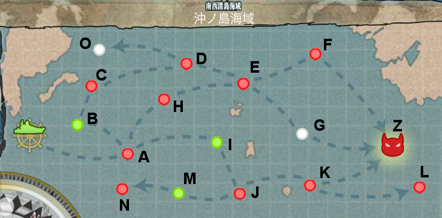
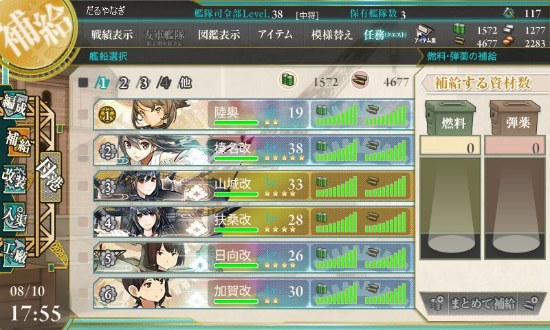
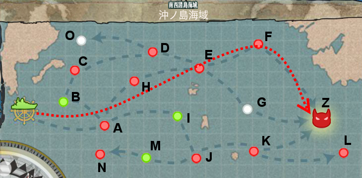
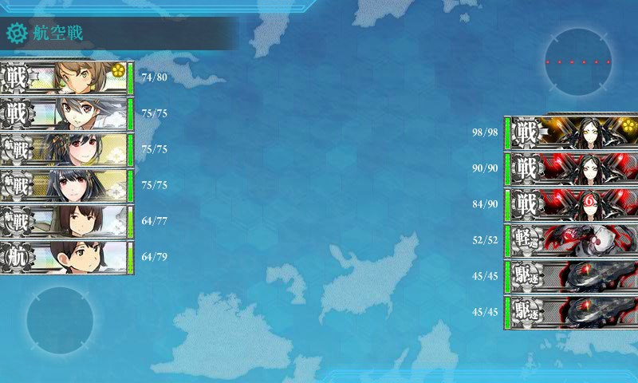
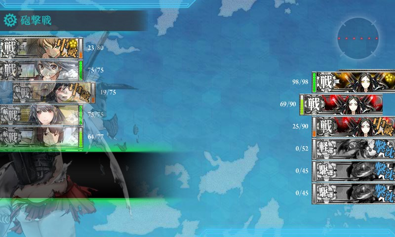
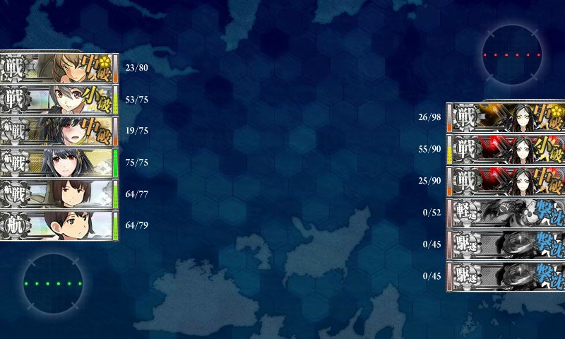
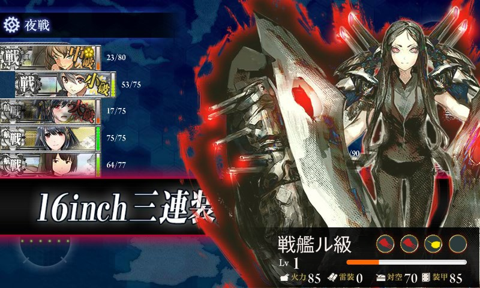
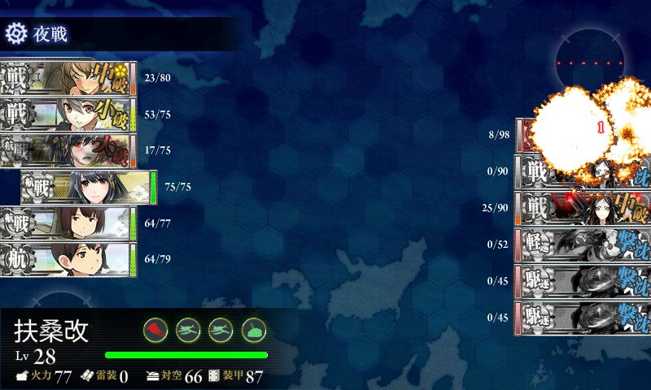
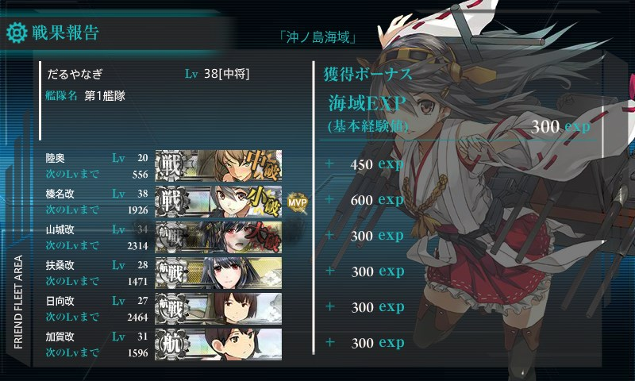
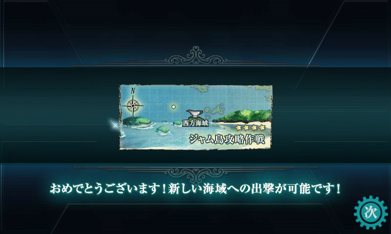

艦これ：2-4 沖ノ島海域を突破！
執筆日時：

（南西諸島海域 - 艦隊これくしょん ～艦これ～ 攻略＆2chまとめwiki - アットウィキ）
初めてから2週間ちょいぐらいかかったことになるのか。とうとう新米提督の鬼門・沖ノ島海域を突破しました！ これで一人前の提督になったってかんじですかね？ ――いやぁ、自分のやり方が悪いのか、いつも資源が足りなくて、一日に一回程度しかアタックできなくてさ……。最初はボスにすらたどり着けなかったし。
編成

これが一張羅。全員をまんべんなくレベル上げするのが好きで*1、司令部レベルの割に一軍のレベルが低いと思う……最近、演習*2でほかのひととレベル差を感じることが多くなってきた。
ついこの前までは陸奥の代わりに軽空母・龍驤ちゃん*3が一軍で頑張ってくれていたのだけど、今回は建造で引き当てたばかりの陸奥（ムッちゃん）を起用。本当なら正規空母・赤城さんに任せるところだけれど、轟沈させてしまったのだから仕方ない。龍驤ちゃんはほんとうに頑張ってくれていたのだけど、いかんせん、軽空母ではすぐに中破してしまい、途中で引き返さざるを得なくなる。「帰ろう、帰ればまた来られるから」*4育成途中のムッちゃんは、轟沈されないよう旗艦に据える*5。装備はコモンばっかり、近代化改装は駆逐艦や軽巡洋艦で装甲を中心にできる限りのことはした。唯一の正規空母・加賀さんもようやく改造できた。あとは祈るしかない。
戦艦ゴリ押し戦法とは情けないが、現状、これが一番可能性が高い。
航路

こんな感じ。途中、E ポイントには敵がいなかったっぽい。羅針盤が C に向かったら初戦だけやって引き返す。途中は絶対夜戦しない、川内ちゃんが泣いてせがんでも夜戦しない。単従陣で速攻潰して、多少撃ち漏らしても即離脱。F だけは空母が出るので輪形陣で被弾しないことをひたすら祈る。今回は運よく、ほとんどノーダメージで抜けられた。千載一遇の好機━━━━(ﾟ∀ﾟ)━━━━!!
ボス戦

実は 2-4 海域のボスに到達したのは今回が初めて。どんな編成でくるかよくわからんかったけど――
なるようになれ！

幸先よく空母（加賀）と航空戦艦（扶桑・山城）で雑魚の駆逐艦と軽巡洋艦を一掃。しかし、まずムッちゃんが中破。ついで砲戦2巡目で不幸な失敗作・山城さんが中破。山城さんは初めてゲットした戦艦なので愛用しているのだけれど、どうも被弾が多くて修理がしんどい。

ちょっと迷ったけど、ええいままよ！ と夜戦に突入。旗艦・ムッちゃんは絶対に撃沈されないし、榛名さん*6はウチのエースだからきっと大丈夫。たぶん勝てそうなのだけど、問題は山城さんが撃沈されないかどうか。でも、もうここまで来て引き返すことなんかできない。行くしかない――が。

容赦なく山城さんを狙う敵戦艦（スクリーンショットでは榛名さんが狙われてるけど）。ﾔﾒﾛ━━━━(ﾟ∀ﾟ)━━━━!! マジでホンマに不幸ババァだ。幸い、近代化改修で防御だけはガチガチにしておいたおかげか、ダメージだけは通らないが。それでも、沈められたらどうしようと思い PC の前で独りプルプルしてた。

とうとう敵の攻撃を凌ぎ切ったのだけど、こっちのダメージは相手に通らない。最後の一発、日向さんの砲撃もカスに終わる。無念……
それでも、A 勝利！

MVP は榛名さん。榛名さんはほんと健気で可愛らしく、それでいて強い。さすが我が軍のエースやで。不幸ババァとは偉い違いや！*7
ちなみにドロップは婚活パーティーが似合う足柄さんでした。

新しい世界だ！ あー、はやく金剛型戦艦コンプリートして第四艦隊を創設したいものだ……*8。正規空母もほしい……。
最後に
スクリーンショットの撮影には
を使いました。あんがとおおきに。あと、
これも便利だった。作者も艦これやってるらしいし、艦これ専門機能がついたら嬉しいかもしれない。